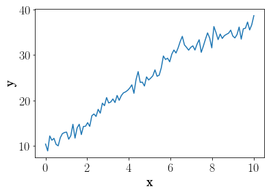
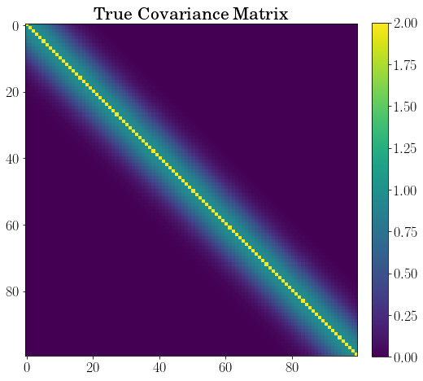
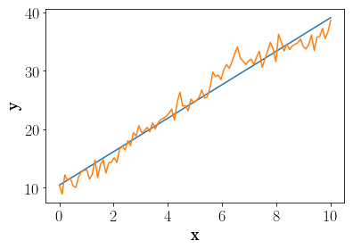
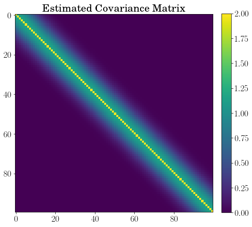
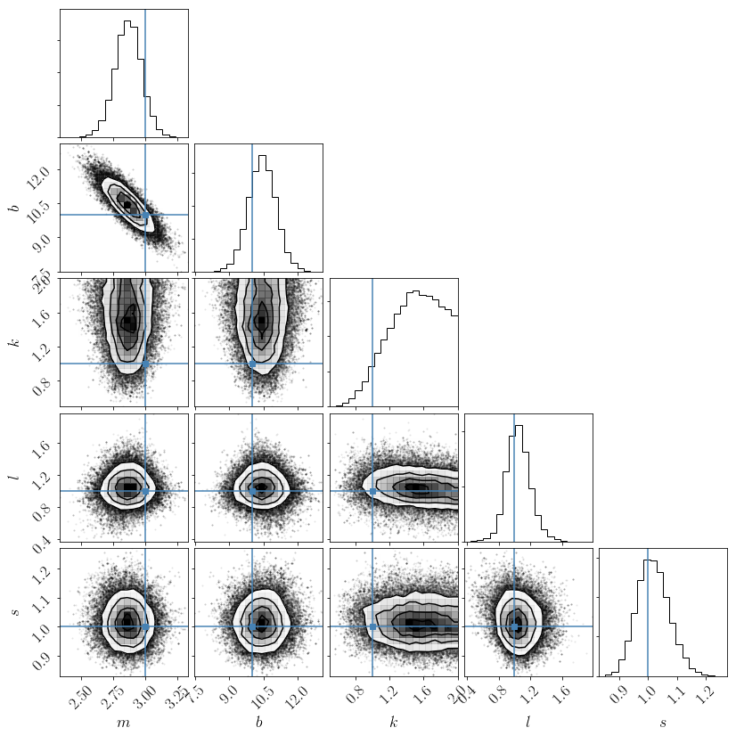
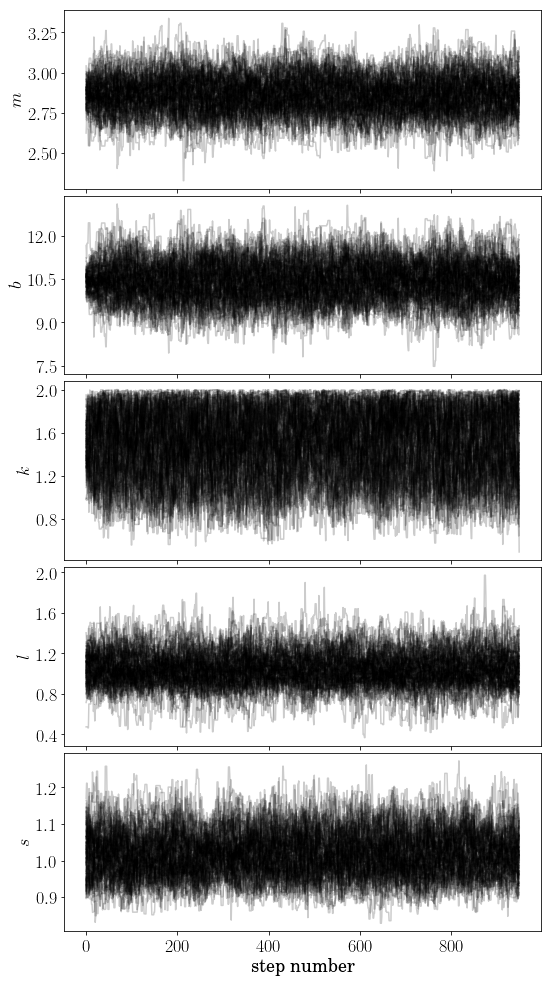

Fitting a line to correlated Gaussian data¶
In [1]:
%matplotlib inline
import numpy as np
import matplotlib.pyplot as pl
import oktopus
from oktopus import MultivariateGaussianPosterior, MultivariateGaussianLikelihood, UniformPrior, JointPrior
from oktopus.models import ExpSquaredKernel, WhiteNoiseKernel
from matplotlib import rc
rc('text', usetex=True)
font = {'family' : 'serif',
'size' : 18,
'serif' : 'New Century Schoolbook'}
rc('font', **font)
In [2]:
x = np.linspace(0, 10, 100)
def mean(m, b):
return m * x + b
def cov(k, l, s):
return ExpSquaredKernel(x).evaluate(k, l) + WhiteNoiseKernel(len(x)).evaluate(s)
np.random.seed(2)
fake_data = np.random.multivariate_normal(mean(3, 10), cov(1, 1, 1))
pl.plot(x, fake_data)
pl.ylabel("y")
pl.xlabel("x")
Out[2]:
<matplotlib.text.Text at 0x115bea160>

In [3]:
fig, ax = pl.subplots(figsize=(8, 14))
im = ax.imshow(cov(1, 1, 1))
ax.set_title("True Covariance Matrix")
cbar = fig.colorbar(im, fraction=0.046, pad=0.04)

In [4]:
prior_m = UniformPrior(1, 5, 'm')
prior_b = UniformPrior(4, 15, 'b')
prior_k = UniformPrior(0, 2, 'k')
prior_l = UniformPrior(0, 2, 'l')
prior_s = UniformPrior(0, 2, 's')
prior = JointPrior(prior_m, prior_b, prior_k, prior_l, prior_s)
prior([2.5, 11, 1.3, 1.5, 0.7])
Out[4]:
5.8636311755980977
In [5]:
posterior = MultivariateGaussianPosterior(fake_data, mean, cov, 2, prior)
In [6]:
map_est = posterior.fit(x0=(2.5, 11, 1.3, 1.5, 0.7))
map_est
Out[6]:
final_simplex: (array([[ 2.8616171 , 10.45113443, 1.46007457, 1.03220664,
1.00774554],
[ 2.86161429, 10.45108805, 1.4601245 , 1.03220865, 1.0077506 ],
[ 2.86159851, 10.45112327, 1.46012812, 1.03219364,
1.00775552],
[ 2.86161999, 10.45105247, 1.45997464, 1.03223138,
1.00774056],
[ 2.86162479, 10.45108222, 1.46008339, 1.03219434, 1.00775 ],
[ 2.86161904, 10.45108653, 1.46007595, 1.032203 ,
1.00776055]]), array([ 136.92914479, 136.92914479, 136.92914481, 136.92914481,
136.92914481, 136.92914481]))
fun: 136.92914478873888
message: 'Optimization terminated successfully.'
nfev: 277
nit: 168
status: 0
success: True
x: array([ 2.8616171 , 10.45113443, 1.46007457, 1.03220664, 1.00774554])
In [8]:
pl.plot(x, mean(*map_est.x[:2]))
pl.plot(x, fake_data)
pl.ylabel("y")
pl.xlabel("x")
Out[8]:
<matplotlib.text.Text at 0x11a5d7c50>

In [9]:
fig, ax = pl.subplots(figsize=(8, 14))
pl.imshow(cov(*map_est.x[2:]))
ax.set_title("Estimated Covariance Matrix")
cbar = fig.colorbar(im, fraction=0.046, pad=0.04)

In [10]:
import emcee
ndim, nwalkers = 5, 100
p0 = [map_est.x + 1e-4*np.random.randn(ndim) for i in range(nwalkers)]
In [13]:
sampler = emcee.EnsembleSampler(nwalkers, ndim, lambda params: - posterior(params))
_ = sampler.run_mcmc(p0, 1000)
In [14]:
samples = sampler.chain[:, 50:, :].reshape((-1, ndim))
samples.shape
Out[14]:
(95000, 5)
In [15]:
import corner
fig = corner.corner(samples, labels=["$m$", "$b$", "$k$", "$l$", "$s$"],
truths=[3, 10, 1, 1, 1])

In [17]:
from matplotlib.ticker import MaxNLocator
label = ["$m$", "$b$", "$k$", "$l$", "$s$"]
fig, axes = pl.subplots(5, 1, sharex=True, figsize=(8, 14))
for i in range(0, 5, 1):
axes[i].plot(sampler.chain[:, 50:, i].T, color="k", alpha=0.2)
axes[i].yaxis.set_major_locator(MaxNLocator(5))
axes[i].set_ylabel(label[i])
axes[4].set_xlabel("step number")
fig.tight_layout(h_pad=0.0)
